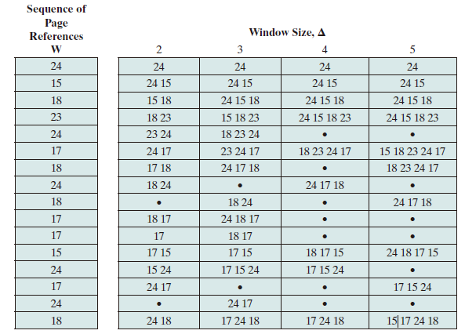

Overview
There are some simple notes of Operating System. Most contents are copied from slides.
Introduction
Isolation
- 强制隔离以避免对整个系统的可用性、可靠性和安全影响
- 运行的程序通常是隔离的单元
- 防止程序 X 破坏或监视程序 Y
- 读/写内存，使用 100% CPU，更改文件描述符
- 防止进程干扰操作系统
- 防止恶意程序、病毒、木马和 bug
- 错误的过程可能会试图欺骗硬件或内核
Methods
- 地址空间
- 一个程序仅寻址其自己的内存
- 每个程序若无许可，则无法访问不属于自己的内存
- CPU 硬件中的特权模式/中断机制
- 防止应用程序访问设备和敏感的 CPU 寄存器
- 例如地址空间配置寄存器
- 例如打断一直占用 CPU 的应用程序
Program Call
- 好处
- 执行很快
- 灵活且易于传递和返回复杂数据类型
- 程序员熟悉的机制
- 坏处
- 应用程序不可靠，可能有崩溃的风险
Interrupt
- CPU 硬件支持中断、异常的处理
- 中断是异步发生的，是来自处理器外部的 I/O 设备的信号结果
- 硬件中断不是由任意一条专门的 CPU 指令造成，从这个意义上它是异步的
- 硬件中断的异常处理程序通常称为中断处理程序
- I/O 设备通过向处理器芯片的一个引脚发信号，并将异常信号放到系统总线上以触发中断
- 在当前指令执行完后，处理器从系统总线读取异常号，保存现场，切换到 Kernel Mode
- 调用中断处理程序，当中断处理程序完成后，它将控制返回到下一条本来要执行的指令
- Timer 可以稳定定时地产生中断
- 防止应用程序一直占用 CPU
- 让 OS Kernel 能周期性地进行资源管理
Exception Handling
Basic principles and concepts
- System Call: 应用程序主动向操作系统发出服务请求。
- Exception: 由于非法指令或其他原因导致当前指令执行失败，（如：内存出错）后的处理请求。
- Hardware Interrupt: 来自硬件设备的处理请求。
Summary
- 源头：
- 中断：外设
- 异常：应用程序意想不到的行为
- 系统调用：应用程序请求 OS 服务
- 相应方式
- 中断：异步
- 异常：同步
- 系统调用：异步或同步
- 处理机制
- 中断：持续且对应用程序透明
- 异常：杀死或重新继续执行
- 系统调用：等待和持续
Interrupt Handling
Establish Interrupt Mechanisms
- 建立中断服务例程
- 初始化
- 设置时钟中断触发次数
- 设置
sie的 TI 使能 STIE 位
- 服务例程
- 调用 OpenSBI 提供的接口设置下次时钟中断触发时间
- 初始化
- 让 CPU 能响应中断
- 硬件设置
- sstatus: 保存全局中断的使能位
- sie: 指出 CPU 目前能处理或忽略的中断
- stvec: 中断入口地址
- 初始化
- 设定
sie的 TI 使能 STIE 位 - 设定
sstatus的使能中断 SIE 位 - 实现中断服务总控函数
- 设置
stvec指向中断服务总控函数的入口地址
- 设定
- 硬件设置
- 相应并处理中断
- 硬件设置
- sepc: 保存中断的指令地址
- pc: 设置为
stvec - scause: 设置中断的来源
- sstatus: SIE 位置零以禁用中断
- stval: 保存了中断相关的附加信息
- 软件保存
- x[0-32]: 通用寄存器
- pc: 设置为
stvec - scause: 设置为中断的来源
- sstatus: SIE 位置零以禁用中断
- stval: 保存了中断相关的附加信息
- 产生中断后
- 硬件设置
- 软件保存被打断现场
- 执行软件实现的中断服务例程
- 软件恢复被打断现场
- 继续执行
- 硬件中断服务例程可被打断
- 不同硬件中断源可能在硬件中断处理时出现
- 中断请求会保持到 CPU 做出响应
- 硬件中断服务例程中需要临时禁止中断请求
- 硬件设置
- 保存或恢复现场
- 还需要为被中断的服务保存和恢复当时程序运行时的上下文
- x[0-32]: 通用寄存器
- sstatus: 系统系状态
- sepc: 触发异常/中断的指令地址
- scause: 指示发生异常/中断的种类
- stval: 保存了发生异常/中断的附加信息
- SAVE_ALL 寄存器
- 还需要为被中断的服务保存和恢复当时程序运行时的上下文
System Call
When an application wants to print a string, it will trigger the system call write().
- 系统调用
- 在 RISC-V 中，
ecall和sret指令用于系统调用 - 堆栈切换和特权级的转换
- 在 RISC-V 中，
- 函数调用
- 在 RISC-V 中，
call和ret指令用于系统调用 - 无堆栈切换和特权级的转换
- 在 RISC-V 中，
Expenditure of System Call
开销会超过函数调用，主要来源：
- 切换内核堆栈
- 验证参数
- 切换页表
- 拷贝数据
Implementation of System Call
- 应用发起请求
std lib发出系统调用请求- 发出设置系统调用号和参数，发出
ecall
- 发出设置系统调用号和参数，发出
- 硬件设置
- sepc：保存请求后的指令地址
- pc: 设置为
stvec - scause: 设置为
ecall from u-mode - sstauts: SIE 位置零以禁用中断
- stval: 保存了相关的附件信息
- 软件保存被打断现场
- 执行软件实现的中断服务例程
- 软件恢复现场
- 应用继续执行
Memory Management
In a uniprogramming system, main memory is divided into two parts: one part for the operating system (resident monitor, kernel) and other part for the program currently being executed. In a multiprogramming system, the “user” part of memory must be further subdivided to accommodate multiple processes. The task of subdivision is carried out dynamically by the operating system and is known as memory management.
Effective memory management is vital in a multiprogramming system. If only a few processes are in memory, then for much of the time all of the processes will be waiting for I/O (input/output), and the processor will be idle. Thus, memory needs to be allocated to ensure a reasonable supply of ready processes to consume available processor time.
In this chapter, some key concepts about contiguous memory allocation and non-contiguous memory allocation will be discussed.
Contiguous Memory Allocation
The Memory Hierarchy
A typical hierarchy is illustrated in figure below.

As one goes down the hierarchy, the following occur:
- Decreasing cost per bit
- Increasing capacity
- Increasing access time
- Decreasing frequency of access to the memory by the processor
Cache Memory
Although cache memory is invisible to the OS, it interacts with other memory management hardware.
Cache Principles
Cache memory is intended to provide memory access time approaching that of the fastest memories available, and at the same time support a large memory size that has the price of less expensive types of semiconductor memories. The concept is illustrated in the Figure below

There is a relatively large and slow main memory together with a smaller, faster cache memory.
The next figure depicts the use of multiple levels of cache.

Main memory consists of up to addressable words, with each word having a unique -bit address. For mapping purposes, this memory is considered to consist of a number of fixed length blocks of K words each. That is there are blocks. Cache consists of C slots (lines) of K words each, and the number of slots is considerably less than the number of main memory blocks ().

Memory Management Methods
- Relocation
- Segmentation
- Paging
- Virtual Memory
Address Space
The range of addresses available to a computer program.
-
A logical address is a reference to a memory location independent of the current assignment of data to memory; a translation must be made to a physical address before the memory access can be achieved.
-
A relative address is a particular example of logical address, in which the address is expressed as a location relative to some known point, usually a value in a processor register.
-
A physical address, or absolute address is an actual location in main memory.
Generating Logical Address
- Compile
- Assemble
- Link
- Relocation
Procedures
- CPU
- ALU: 需要逻辑地址的内存内容
- MMU：进行逻辑地址和物理地址的转换
- CPU 控制逻辑：给总线发送物理地址请求
- 内存： 发送物理地址的内容给 CPU 或接受 CPU 数据到物理地址
- 操作系统：建立逻辑地址与物理地址的映射
Address Check

Memory Partitioning
The principal operation of memory management is to bring processes into main memory for execution by the processor.
Fixed Partitioning
In most schemes for memory management, we can assume the OS occupies some fixed portion of main memory, and the rest of main memory is available for use by multiple processes. The simplest scheme for managing this available memory is to partition it into regions with fixed boundaries.
Description
Main memory is divided into a number of static partitions at system generation time. A process may be loaded into a partition of equal or greater size.
Strengths
Simple to implement; little operating system overhead.
Weaknesses
Inefficient use of memory due to internal fragmentation; maximum number of active processes is fixed.

With unequal-size partitions, there are two possible ways to assign processes to partitions. The simplest way is to assign each process to the smallest partition within which it will fit. In this case, a scheduling queue is needed for each partition to hold swapped-out processes destined for that partition
Internal Fragmentation
Occurs when memory is divided into fixed-size partitions (e.g., page frames in main memory, physical blocks on disk). If a block of data is assigned to one or more partitions, then there may be wasted space in the last partition. This will occur if the last portion of data is smaller than the last partition.
External Fragmentation
Occurs when memory is divided into variable-size partitions corresponding to the blocks of data assigned to the memory (e.g., segments in main memory). As segments are moved into and out of the memory, gaps will occur between the occupied portions of memory.
Dynamic Partitioning
Description
Partitions are created dynamically, so each process is loaded into a partition of exactly the same size as that process. Data structure is used in dynamic partitioning to maintain allocated blocks and empty blocks.
Strengths
No internal fragmentation; more efficient use of main memory.
Weaknesses
Inefficient use of processor due to the need for compaction to counter external fragmentation.
Placement Algorithms
Three placement algorithms that might be considered are best-fit, first-fit, and next-fit. All, of course, are limited to choosing among free blocks of main memory that are equal to or larger than the process to be brought in. Best-fit chooses the block that is closest in size to the request. First-fit begins to scan memory from the beginning and chooses the first available block that is large enough. Next-fit begins to scan memory from the location of the last placement and chooses the next available block that is large enough.
-
Best-fit: 分配 n 字节的分区时，查找并使用不小于 n 的最小空闲分区
- 原理及实现
- 空闲分区列表按大小排序
- 分配时查找一个合适的分区
- 释放时查找并合并邻近的空闲分区
- 优点
- 大部分分配块的尺寸较小时效果较好
- 可避免大的空闲分区被拆分
- 可减小外部碎片的大小
- 实现简单
- 缺点
- 容易产生外部碎片
- 释放分区速度较慢
- 原理及实现
-
Worst-fit: 分配 n 字节，使用尺寸不小于 n 的最大空闲分区
-
原理及实现
- 空闲分区列表按由大到小排序
- 分配时，选最大的分区
- 释放时，尽可能与邻近分区合并，并调整空闲分区列表顺序
-
优点
- 中等大小的分配请求较多时，效果最好
- 不会出现太多的小碎片
-
缺点
- 释放分区速度较慢
- 容易产生外部碎片
- 容易破坏大的空闲分区
-
-
First-fit: 分配 n 个字节，使用第一个可用的空间比 n 大的空闲块。
- 原理及实现
- 空闲分区列表按地址顺序排序
- 分配时，选第一个合适的分区
- 释放时，尽可能与邻近分区合并
- 优点
- 实现简单
- 在高地址空间有大块的空闲分区
- 缺点
- 分配大块空间速度较慢
- 容易产生外部碎片
- 原理及实现
Defragmentation
通过调整进程占用的分区位置来减少或避免分区碎片。
Compaction
通过移动分配给进程的内存分区，以合并外部碎片。
碎片紧凑的条件：所有的应用程序可动态重定位。
Swapping in/out
通过抢占并回收处于等待状态进程的分区，以增大可用内存空间
Buddy System
Both fixed and dynamic partitioning schemes have drawbacks. A fixed partitioning scheme limits the number of active processes and may use space inefficiently if there is a poor match between available partition sizes and process sizes. A dynamic partitioning scheme is more complex to maintain and includes the overhead of compaction. An interesting compromise is the buddy system. In a buddy system, memory blocks are available of size words, , where
-
small size block that allocated
-
largest size block that is allocated; generally is the size of the entire memory available for allocation
To begin, the entire space available for allocation is treated as a single block of size . If a request of size such that is made, then the entire block is allocated. Otherwise, the block is split into two equal buddies of size . This process continues until the smallest block greater than or equal to is generated and allocated to the request. At any time, the buddy system maintains a list of holes (unallocated blocks) of each size . A hole may be removed from the list by splitting it in half to create two buddies of size in the list. Whenever a pair of buddies on the list both become unallocated,they are removed from that list and coalesced into a single block on the list. Presented with a request for an allocation of size such that .
The Figure below gives an example using a 1-Mbyte initial block.
Implementation
- 数据结构
- 空闲块按大小和起始地址组织成二维数组
- 初始状态：只有一个大小为 的空闲块
- 分配过程
- 由小到大在空闲块数组中找最小的可用空闲块
- 如空闲块过大，对可用空闲块进行二等分，直到得到合适的可用空闲块
- 释放过程
- 把释放的块放入空闲块数组
- 合并满足合并条件的空闲块
- 合并条件
- 大小相同为
- 地址相邻
- 低地址空闲块起始地址为 的倍数
Non-contiguous Memory Allocation
- 设计目标：提高内存利用效率和管理灵活性
- 优点
- 允许一个程序的使用非连续的物理地址空间
- 允许共享代码与数据
- 支持动态加载和动态链接
Segmentation
Segmented Address Space
进程的段地址空间由多个段组成：主代码段、子模块代码段、公用库代码段、堆栈段（stack）、堆数据（heap）、初始化数据段和符号表等。
段式存储管理的目的在于更细粒度和灵活的分离与共享。
Access Mechanisms
-
段的概念
- 段表示访问方式和储存数据等属性相同的一段地址空间。
- 对应一个连续的内存块
- 若干个段组成逻辑地址空间
-
段访问： 逻辑地址由段基址+段内偏移组成的二元组构成
Paging
- Frame: 把物理地址空间划分为大小相同的基本分配单位（2 的 次方）
- Page: 把逻辑地址空间也划分为相同大小的基本分配单位
- Frame 和 Page 的大小必须是相同的
Frame
物理内存被划分为相同大小的帧，用二元组 表示，其中 代表帧号（共有 个帧），每个帧有 个字节。因此物理地址计算公式为
Page
进程逻辑地址空间被划分为大小相等的页，通常来讲，页内偏移等于段内偏移但页号不等于帧号。逻辑地址由二元组 表示，虚拟地址计算公式为
Address Mapping
- 逻辑地址中的页号是连续的
- 物理地址中的帧号不是连续的
- 不是所有的页都有相应的帧对应
Page Tables
Page tables save the information of the mapping from logical addresses to physical addresses.
每一个进程都有一个页表，每一个页面对应一个页表项，通过 Page Table Base Register (PTBR) 实现页面到页表项之间的映射。
Page Table Entries

-
Frame Number: It gives the frame number in which the current page you are looking for is present. The number of bits required depends on the number of frames.Frame bit is also known as address translation bit.
-
Present/Absent Bit: Present or absent bit says whether a particular page you are looking for is present or absent. In case if it is not present, that is called Page Faults. It is set to 0 if the corresponding page is not in memory. Used to control page faults by the operating system to support virtual memory. Sometimes this bit is also known as valid/invalid bits.
-
Protection Bit: Protection bit says that what kind of protection you want on that page. So, these bit for the protection of the page frame (read, write etc).
-
Referenced bit: Referenced bit will say whether this page has been referred in the last clock cycle or not. It is set to 1 by hardware when the page is accessed.
-
Modified Bit: Modified bit says whether the page has been modified or not. Modified means sometimes you might try to write something on to the page. If a page is modified, then whenever you should replace that page with some other page, then the modified information should be kept on the hard disk or it has to be written back or it has to be saved back. It is set to 1 by hardware on write-access to page. Sometimes this modified bit is also called as the Dirty bit.
-
Caching Enable/Disabled: a bit enables or disable caching of the page.
Performance Problem
- 访问一个内存单元需要先访问页表，再访问数据。
- 页表可能会非常大
How to solve: Caching or Indirection
Translation Lookaside Buffer
Translation lookaside buffer (TLB) functions in the same way as a memory cache and contains those page table entries that have been most recently used. The organization of the resulting paging hardware is illustrated in Figure below. Given a virtual address, the processor will first examine the TLB. If the desired page table entry is present (TLB hit), then the frame number is retrieved and the real address is formed. If the desired page table entry is not found (TLB miss), then the processor uses the page number to index the process page table and examine the corresponding page table entry. If the “present bit” is set, then the page is in main memory, and the processor can retrieve the frame number from the page table entry to form the real address. The processor also updates the TLB to include this new page table entry. Finally, if the present bit is not set, then the desired page is not in main memory and a memory access fault, called a page fault, is issued.

Hierarchical Page Table
Take a two-level hierarchical page table as an example:
Virtual Memory
Preliminary Concepts
Overlay
-
解释：应用程序手动把需要的指令和数据保存在内存中
-
目标：在较小的可用内存中运行较大的程序
-
特点：
- 只能发生在没有调用关系的模块间
- 程序员必须给出模块间的逻辑覆盖结构
- 发生在运行程序的内部模块间
-
方法：根据程序逻辑结构，将程序划分为若干功能相对独立的模块，将不会同时执行的模块共享同一块内存区域。
- 必要部分（常用功能）的代码和数据常驻内存
- 可选部分（不常用功能）放在其他程序模块中，只在需要用到的时候装入内存
- 不存在调用关系模块可共享一块内存区域
-
示例
-
不足
- 增加编程困难
- 需要划分功能模块并确定模块间的覆盖关系
- 增加了编程的复杂度
- 增加执行时间
- 从外存装入覆盖模块
- 时间换空间
- 增加编程困难
Swapping
- 目标：增加正在运行或需要运行的程序的内存
- 特点：
- 以进程为单位
- 不需要模块间的逻辑覆盖结构
- 发生在内存进程间
- 实现方法：
- 可将暂时不能运行的程序放到外存
- 换入换出的基本单位：整个进程的地址空间
- 换出 (swap out)：把一个进程的整个地址空间保存到外存
- 换入 (swap in)：将外存中某进程的地址空间读入到内存
- 问题与解答
- 何时需要交换：当内存空间不够或又不够的可能时换出
- 交换区大小：存放所有用户进程的所有内存映像的拷贝
- 换出后再换入时要放在原处吗（重定位问题）：采用动态地址映射的方法
The Principle of Locality
Intuitively, the principle of locality makes sense. Consider the following line of reasoning:
-
Except for branch and call instructions, which constitute only a small fraction of all program instructions, program execution is sequential. Hence, in most cases, the next instruction to be fetched immediately follows the last instruction fetched.
-
It is rare to have a long uninterrupted sequence of procedure calls followed by the corresponding sequence of returns. Rather, a program remains confined to a rather narrow window of procedure-invocation depth. Thus, over a short period of time, references to instructions tend to be localized to a few procedures.
-
Most iterative constructs consist of a relatively small number of instructions repeated many times. For the duration of the iteration, computation is therefore confined to a small contiguous portion of a program.
-
In many programs, much of the computation involves processing data structures, such as arrays or sequences of records. In many cases, successive references to these data structures will be to closely located data items.
To summarize, the principle of locality states that program and data references within a process tend to cluster. Hence, the assumption that only a few pieces of a process will be needed over a short period of time is valid. Also, it should be possible to make intelligent guesses about which pieces of a process will be needed in the near future, which avoids thrashing.
Example
for (int j = 0; j < 1024; j++)
for (int i = 0; i < 1024; i++) A[i][j] = 0;
for (int i = 0; i < 1024; i++)
for (int j = 0; j < 1024; j++) A[i][j] = 0;
In the first code, page faults occur, and in the second code, page faults occur.
Virtual Storage
-
思路
- 把不常用的部分内存块暂存到外
-
原理
- 装载程序时
- 只将当前指令执行需要的部分页面或段载入内存
- 指令执行中需要的指令或数据不在内存（即缺页或缺段）时
- 处理器通知操作系统将相应的页或段调入内存
- 操作系统将内存中暂时不用的页或段保存到外存
- 装载程序时
-
实现方式
- 虚拟页式存储
- 虚拟段式存储
-
基本特征
- 不连续性
- 物理内存分配非连续
- 虚拟地址空间使用非连续
- 大用户空间
- 提供给用户的虚拟内存可大于实际的物理内存
- 部分交换
- 虚拟存储只对部分虚拟地址空间进行调入和调出
- 不连续性
Virtual Pages
在页式存储管理的增加请求掉和和页面替换
- 当用户程序装载到内存运行时，只装入部分页面就启动程序运行
- 进程在运行中发现有需要的代码或数据不在内存中就向系统发出缺页异常请求
- 操作系统在处理缺页异常时，将外存中的相应页面载入内存使得进程能继续执行

Page Table Entries
Page Faults
Procedures
- 在内存中有空闲物理帧时，分配一物理帧 f，转第 5 步
- 根据页面替换算法选择将被替换的物理帧对应的逻辑页 q
- 若 q 被修改过则将它写回内存
- 修改 q 的 present bit 为 0
- 将需要访问的页 p 载入物理帧 f
- 修改 p 的 present bit 为 1，帧号为 f
- 重新执行产生缺页的指令
Effective Memory-access Time
-
Hit Ratio: The percentage of times that a particular page number is found in the TLB.
-
TLB Hit: The page is found in TLB
-
TLB Miss: The page is not found in the TLB so that accessing memory to get the page table entries and the data is needed.
Example
- TLB lookup takes 5 nano sec.
- Memory access time is 100 nano sec.
- Hit ratio is 80%.
What is the effective memory access time?
Local Replacement
Introduction
- 置换算法实现的功能：当出现缺页异常，需调入新页面而内存已满时，置换算法选择被置换的物理页面
- 设计目标
- 尽可能减少页面调入调出的次数
- 把短期内不再访问的页面调出
- 页面锁定 (frame locking)
- 描述必须常驻内存的逻辑页面
- 操作系统的关键部分
- 要求响应速度的代码和数据
- 页表中的锁定标志位 (lock bit)
- 评价方法
- 模拟页面置换行为，记录产生缺页的次数
- 更少的缺页次数，更好的性能
Algorithms
Optimal (OPT)
- Selects for replacement that page for which the time to the next reference is the longest (based on future information), and results in the fewest number of page faults.
- Impossible to implement
- Benchmark algorithm (a standard to judge real-world algorithms)
Least recently used (LRU)
- Replaces the page in memory that has not been referenced for the long time (based on past information). By the principle of locality, this should be the page least likely to be referenced in the near future.
- Does nearly as well as the optimal policy.
- Implement by linked list or stack, ordered by visit time, with high time complexity.
- LRU can be degenerated into FIFO if a block have not been referenced since it was fetched into memory.
First-in-first-out (FIFO)
- Replacing the page that has been in memory the longest: A page fetched into memory a long time ago may have now fallen out of use
- Process as a circular buffer
- May cause belady anomaly
- Easy to implement but performs poorly (Belady Anomaly)
Clock
- Organize frames in a circular buffer with which a pointer is associated.
- First loaded or subsequently referenced, use bit = 1.
- When replace, find a frame with use bit = 0, and reset use bit of frames that each scan encounters to 0.
- If all of the frames have a use bit of 1, then the pointer will make one complete cycle through the buffer, setting all the use bits to 0, and stop at its original position, replacing the page in that frame.
- An implementation of LRU using FIFO mechanism.
Improved Clock
The clock algorithm can be made more powerful by increasing the number of bits that it employs like
- Not accessed recently, not modified (u = 0; m = 0)
- Accessed recently, not modified (u = 1; m = 0)
- Not accessed recently, modified (u = 0; m = 1)
- Accessed recently, modified (u = 1; m = 1)
- Beginning at the current position of the pointer, scan the frame buffer. During this scan, make no changes to the use bit. The first frame encountered with (u = 0; m = 0) is selected for replacement.
- If step 1 fails, scan again, looking for the frame with (u = 0; m = 1). The first such frame encountered is selected for replacement. During this scan, set the use bit to 0 on each frame that is bypassed.
- If step 2 fails, the pointer should have returned to its original position and all of the frames in the set will have a use bit of 0. Repeat step 1 and, if necessary, step 2. This time, a frame will be found for the replacement.
Least Frequently Used
- Replace the block in the set that has experienced the fewest references.
- could be implemented by associating a counter with each block.
- When a block is brought in, it is assigned a count of 1; with each reference to the block, its count is incremented by 1. When replacement is required, the block with the smallest count is selected.
- Make poor replacement choices when certain blocks are referenced relatively infrequently overall, but frequently in some short intervals of repeated references due to locality, thus building up high reference counts.
FBR
- To overcome this difficulty with LFU, a technique known as frequency-based replacement is proposed.
- A simple version in the Figure (a): The blocks are organized in a stack and the top part of the stack is designated for the new section, which means the referenced block is moved to the top of the new section if there is a cache hit. Besides, if the block is not in the new section (i.e. the old section), its reference count increments by 1.
- A further refinement addresses this problem, seeing Figure (b): Divide the stack into three sections (new, middle and old). As before, reference counts are not incremented on blocks in the new section. However, only blocks in the old section are eligible for replacement. Supposing a sufficiently large middle section, this allows relatively frequently referenced blocks a chance to build uo their counts before becoming eligible for replacement (buffer section). Simulation studies indicates that this refined policy is significantly better than LRU or LFU. Note that sizes of new, middle and old sections are hyperparameters which should be fine tuned in daily use.

Example
OPT/LRU/FIFO/CLOCK

Improved Clock
| Time | 0 | 1 | 2 | 3 | 4 | 5 | 6 | 7 | 8 | 9 | 10 |
|---|---|---|---|---|---|---|---|---|---|---|---|
| Request | c | aw | d | bw | e | b | aw | b | c | d | |
| Frame 0 (u,m) | a(00) | a(00) | a(11) | a(11) | a(11) | a(01) | a(01) | a(11) | a(11) | a(11) | a(01) |
| Frame 1 (u,m) | b(00) | b(00) | b(00) | b(00) | b(11) | b(01) | b(11) | b(11) | b(11) | b(11) | b(01) |
| Frame 2 (u,m) | c(00) | c(10) | c(10) | c(10) | c(10) | e(10) | e(10) | e(10) | e(10) | e(10) | d(10) |
| Frame 3 (u,m) | d(00) | d(00) | d(00) | d(10) | d(10) | d(00) | d(00) | d(00) | d(00) | c(10) | c(00) |
| Page Fault | √ | √ | √ |
LFU
Notice that ax means a has been referenced for x times.
| Time | 0 | 1 | 2 | 3 | 4 | 5 | 6 | 7 | 8 | 9 | 10 |
|---|---|---|---|---|---|---|---|---|---|---|---|
| Request | c7 | a1 | d14 | b5 | e18 | b1 | a19 | b20 | c20 | d17 | |
| Frame 0 | a8 | a8 | a9 | a9 | a9 | e18 | e18 | e18 | e18 | e18 | d17 |
| Frame 1 | b5 | b5 | b5 | b5 | b10 | b10 | b11 | a19 | a19 | a19 | a19 |
| Frame 2 | c6 | c13 | c13 | c13 | c13 | c13 | c13 | c13 | b20 | b20 | b20 |
| Frame 3 | d2 | d2 | d2 | d16 | d16 | d16 | d16 | d16 | d16 | c20 | c20 |
| Page Fault | √ | √ | √ | √ | √ |
Belady Anomaly
Belady anomaly is the phenomenon in which increasing the number of page frames results in an increase in the number of page faults for certain memory access patterns. This phenomenon is commonly experienced when using the first-in first-out (FIFO) page replacement algorithm.
In FIFO, the page fault may or may not increase as the page frames increase, but in Optimal and stack-based algorithms like LRU, as the page frames increase the page fault decreases.
Global Replacement
A global replacement policy considers all unlocked pages in main memory as candidates for replacement, regardless of which process owns a particular page.
-
全局置换算法要解决的问题
- 进程在不同阶段的内存需求是变化的
- 分配给进程的内存也需要在不同阶段有所变化
- 全局置换算法需要确定分配给进程的物理页面数
-
CPU 利用率与并发进程数的关系
- 进程数少时，提高并发进程数可提高 CPU 利用率
- 并发进程导致内存访问增加
- 并发进程的内存访问降低了访存的局部性特征
- 局部性特征的下降会导致缺页率上升和 CPU 利用率下降
Working Set Strategy
Working Set
The working set with parameter for a process at virtual time , which we designate as , is the set of pages of that process that have been referenced in the last virtual time units.The variable is a window of virtual time over which the process is observed. （当前时刻 前的 时间窗口中的所有访问页面所组成的集合）
The working set size will be a non-decreasing function of the window size. The result is illustrated in Figure below, which shows a sequence of page references for a process.

Note that the larger the window size, the larger is the working set, which can be expressed in the following relationship: The working set is also a function of time. If a process executes over time units and uses only a single page, . A working set can also grow as large as the number of pages N of the process, if many different pages are rapidly addressed and if the window size allows. Thus,

Figure above indicates the way in which the working set size can vary over time for a fixed value of . For many programs, periods of relatively stable working set sizes alternate with periods of rapid change.
- When a process first begins executing, it gradually builds up to a working set as it references new pages.
- Eventually by the principle of locality, the process should stabilize on a certain set of pages.
- Subsequent transient periods reflect a shift of the program to a new locality.
- During the transition phase, some of the pages from the old locality remain with the window, causing a surge in the size of the working as new pages are referenced.
- As the window slides past these page references, the working set size declines until it contains only those pages from the new locality.
Resident Set
That portion of a process that is actually in main memory at a given time. （在当前时刻，进程实际驻留在内存当中的页面集合）
- Resident Set 和 Working Set 的关系
- Working Set 是进程在运行过程中固有性质
- Resident Set 取决于系统分配给进程物理页面的数目和页面置换算法
- Resident Set 与 Page Fault Rate 的关系
- ，缺页较少
- Working Set 发生剧烈抖动时，缺页较多
- 进程 Resident Set 大小达到一定数目后，PFF 不会显著下降
Algorithm
Basic Idea
- Monitor the working set of each process.
- Periodically remove from the resident set of a process those pages that are not in its working set. This is essentially an LRU policy.
- A process may execute only if its working set is in main memory (i.e., if its resident set includes its working set).
Implementation
- 窗口大小：当前时刻前 个访问页面
- 访存链表
- 访存时，换出不在工作集的页面，更新访存链表
- 缺页时，换入页面，更新访存链表
Example

Page Fault Frequency Strategy
Page Fault Rate (PFR)
The reciprocal of time between page faults is the page fault rate.
- 影响 PFR 的因素
- 页面置换算法
- 分配给进程的物理页面数目
- 页面大小
- 程序写法
Algorithm
Basic Idea
- It requires a use bit to be associated with each page in memory. The bit is set to 1 when that page is accessed. When a page fault occurs, the OS notes the virtual time since the last page fault for that process; this could be done by maintaining a counter of page references.
- A threshold F is defined. If the amount of time since the last page fault is less than F, then a page is added to the resident set of the process.
- Otherwise, discard all pages with a use bit of 0, and shrink the resident set accordingly. At the same time, reset the use bit on the remaining pages of the process to 0.
Example
The threshold F=2

Thrashing
A phenomenon in virtual memory schemes, in which the processor spends most of its time swapping pieces rather than executing instructions.
- 产生原因：随着驻留内存进程数的增加，由于页面数有限，导致缺页现象频繁发生。
- 操作系统需要在并发水平和缺页率间达到一个平衡，即选择一个适当进程数目和进程需要的页面数
FBR
Processes and Threads
Processes
Definition
进程是指一个具有一定独立功能的程序在一个数据集合上的一次动态执行过程。
Composition
- 代码
- 数据
- 状态寄存器：CR0, IP
- 通用寄存器：AX, BX, CX
- 进程占用系统资源
Features
- 动态性：可动态地创建、结束进程
- 并发性：进程可以被独立调度并占用处理机运行
- 独立性：不同进程的工作不相互影响
- 制约性：因访问共享数据/资源或进程间同步而产生制约
Relations and Discrepancies between programs
Relations
- Processes are the abstract of Programs in executive states
- Program = Static executive file
- Process = Program + executive states
- Multiple executions of the some program are regarded as different processes.
- Necessary resources in executing processes: Memory and CPU
Discrepancies
- 进程时动态的，程序时静态的
- 程序是有序代码的集合
- 进程是程序的执行
- 进程是暂时的，程序时永久的
- 进程是一个状态变化的过程
- 程序可长久保存
- 进程与程序的组成不同：进程的组成包括程序、数据和进程控制块
Process Control Block
操作系统用 PCB 来进程的基本状态，每个进程都在操作系统中有一个唯一对应的PCB
Structure
At any given point in time, while the program is executing, this process can be uniquely characterized by a number of elements, including the following:
- Identifier: A unique identifier associated with this process, to distinguish it from all other processes.
- State: If the process is currently executing, it is in the running state.
- Priority: Priority level relative to other processes.
- Program counter: The address of the next instruction in the program to be executed.
- Memory pointers: Include pointers to the program code and data associated with this process, plus any memory blocks shared with other processes.
- Context data: These are data that are present in registers in the processor while the process is executing.
- I/O status information: Includes outstanding I/O requests, I/O devices assigned to this process, a list of files in use by the process, and so on.
- Accounting information: May include the amount of processor time and clock time used, time limits, account numbers, and so on.

Control Information
-
调度和状态信息： 调度进程和处理及使用情况
-
进程间通信信息： 进程间通信相关的各种标识
-
储存管理信息
-
进程所用资源
-
有关数据结构的连接信息
Implementation
- 链表：同一状态进程的 PCB 组成链表
- 索引表：统一状态进程的 PCB 被同一索引指向
Process States
Life-cycle
- 进程创建
- 系统初始化时
- 用户请求创建一个新进程
- 被其他进程调用
- 进程执行
- 内核选择一个就绪进程，让其占用处理机并执行
- 进程等待
- 请求并等待系统服务，无法马上完成
- 启动某种无法马上完成的操作
- 需要的资源没有达到
- 进程抢占
- 被高优先级进程抢占
- 在规定时间内未完成
- 进程唤醒
- 被阻塞进程需要的资源可被满足
- 被阻塞进程等待的时间到达
- 被阻塞的进程只能被别的进程或操作系统唤醒
- 进程结束
- 自愿结束
- 正常退出
- 错误退出
- 非自愿结束
- 致命错误
- 被其他进程所杀
- 自愿结束
操作系统在 中断 中处理进程
以 Sleep() 为例，创建 -> 就绪 -> 运行 -> 等待 -> 操作系统时钟中断 ...
Process Creation
Processes Switching

Processes Termination
A Two-State Process Model

A Five-State Model
Split the Not Running state of the two-state process model into two states: Ready and Blocked and add two additional states for good measure, we can get a five-state model as follows:
- Running: The process that is currently being executed.
- Ready: A process that is prepared to execute when given the opportunity.
- Blocked/Waiting: A process that cannot execute until some event occurs, such as the completion of an I/O operation.
- New: A process that has just been created but has not yet been admitted to the pool of executable processes by the OS. Typically, a new process has not yet been loaded into main memory, although its process control block has been created.
- Exit: A process that has been released from the pool of executable processes by the OS, either because it halted or because it aborted for some reason.

Figure above indicates the types of events that lead to each state transition for a process; the possible transitions are as follows:
- Null -> New: A new process is created to execute a program.
- New -> Ready: The OS will move a process from the New state to the Ready state when it is prepared to take on an additional process.
- Ready -> Running: When it is time to select a process to run, the OS chooses one of the processes in the Ready state.
- Running -> Exit: The currently running process is terminated by the OS if the process indicates that it has completed or if it aborts.
- Running -> Ready
- The running process has reached the maximum allowable time for uninterrupted execution;
- The OS preempted a process if there is another process with higher priority level being blocked.
- Running -> Blocked: A process is put in the Blocked state if it requests something for which it must wait. For example, a process may request a service from OS that OS is not prepared to perform immediately or a process may initiate that must be completed before the process can continue.
- Blocked -> Ready: A process in the Blocked state is moved to the Ready state when the event for which it has been waiting occurs.
- Ready -> Exit: For clarity, this transition is not shown on the state diagram. In some systems, a parent may terminate a child process at any time. Also, if a parent terminates, all child processes associated with that parent may be terminated.
- Blocked -> Exit: The comments under the preceding item apply.
Suspended Processes
There are two independent concepts here: whether a process is waiting on an event (blocked or not), and whether a process has been swapped out of main memory (suspended or not). To accommodate this combination, we need four states:
- Ready: The process is in main memory and available for execution.
- Blocked: The process is in main memory and awaiting an event.
- Blocked/Suspend: The process is in secondary memory and awaiting an event.
- Ready/Suspend: The process is in secondary memory but is available for execution as soon as it is loaded into main memory.
Important new transitions are the following:
- Blocked -> Blocked/Suspend:
- Blocked/Suspend -> Ready/Suspend:
- Ready/Suspend -> Ready:
- Ready -> Ready/Suspend:
- Blocked/Suspend -> Blocked:
Queueing Model
Process Switching
On the face of it, the function of process switching would seem to be straightforward. At some time, a running process is interrupted, and the OS assigns another process to the Running state and turns control over to that process. However, several design issues are raised.
- First, what events trigger a process switch?
- Another issue is that we must recognize the distinction between mode switching and process switching.
- Finally, what must the OS do to the various data structures under its control to achieve a process switch?
When to Switch Processes:
- Interrupt
- Clock interrupt
- I/O interrupt
- Memory fault
- Trap
- Supervisor call
进程切换的要求：
- 切换前，保存进程上下文
- 切换后，恢复进程上下文
- 快速切换
进程生命周期的信息：
- 寄存器
- CPU 状态
- 内存地址空间
Example
以进程 P0、进程 P1 为例：
P0 执行 --> 中断或系统调用 --> P0 保存 --> P1 恢复 --> P1 执行 --> 中断或系统调用 --> P1 保存 --> P0 恢复 --> P0 执行
图示：
在进程切换的过程中，内核为每一个进程维护了一个对应的进程控制块（PCB），内核将相同状态进程的 PCB 放在同一队列。
Instructions in Linux
- 创建进程：
forkorexec - 父进程等待子进程：
wait - 进程的有序终止：
exit - 优先级控制：
nice - 进程调试支持：
ptrace - 定时：
sleep

Threads
Introduction
多进程的问题：
- 如何通信、如何共享数据
- 系统开销较大，涉及进程的创建、进程的终止等
解决思路即在进程内部增加一类实体，满足以下特性：
- 实体之间可以并发执行
- 实体之间共享相同的地址空间
Definition
线程是进程的一部分，描述指令流执行状态，它是进程中指令执行流的最小单位，是 CPU 调度的基本单位。
线程间的堆栈 (Heap) 资源不能共享。
线程是资源调度的基本单位，即线程描述在进程资源环境中指令流的执行状态。因此同一个进程内的线程共享其资源。
Multithreading
Multithreading refers to the ability of an OS to support multiple, concurrent paths of execution within a single process.

The left half of Figure depicts single-threaded approaches.
- MS-DOS is an example of an OS that supports a single-user process and a single thread.
- Other operating systems, such as some variants of UNIX, support multiple user processes, but only support one thread per process.
The right half part of Figure states two multithreaded approaches.
- A Java runtime environment is an example of a system of one process with multiple threads.
- Windows, Solaris, and many modern versions of UNIX use multiple processes, each of which supports multiple threads.
In a multithreaded environment, a process is defined as the unit of resource allocation and a unit of protection. The following are associated with processes:
- A virtual address space that holds the process image.
- Protected access to processors, other processors, files, and I/O resources.
With a process, there may be one or more threads, each with following:
- A thread execution state (Running, Ready, etc.)
- A saved thread context when not running; one way to review a thread is as an independent program counter operating within a process
- An execution stack
- Some per-thread static storage for local variables
- Access to the memory and resources of its process, shared with all other threads in that process.
The Figure below illustrates the distinction between threads and processes from the point of view of process management.
The key benefits of threads derive from the performance implications:
-
It takes far less time to create a new thread in an existing process, than to create a brand-new process.
-
It takes less time to terminate a thread than a process.
-
It takes less time to switch between two thread s within the same process than to switch between processes.
-
Threads enhance efficiency in communication between different executing programs.
- 多线程的优点
- 一个进程中可以同时存在多个线程
- 多线程之间可以并发
- 线程间共享地址空间和文件等资源
- 多线程的缺点
- 一个线程崩溃，会导致同属一个进程下的其他线程崩溃
Types of Threads
There are two broad categories of thread implementation: user-level threads (ULTs) and kernel-level threads (KLTs). The latter are also referred to in the literature as kernel-supported threads or lightweight processes.
User-level Threads
由一组用户级的线程库函数来完成线程的管理，包括线程的创建、终止、同步和调度等。

-
优点
- 不依赖于操作系统
- 在用户空间实现线程机制
- 每个进程有私有的线程控制块（TCB）列表
- TCB 列表又线程库函数维护
- 同一进程内的用户线程切换速度快
- 允许每个进程拥有自己的线程调度算法
-
不足
- 线程发起系统调用而阻塞时，整个线程进入等待。
- 除非当前运行线程主动放弃，否则其所在进程的其他线程无法抢占 CPU
- 不支持基于线程的处理机抢占，除非当前运行线程主动放弃
- 只能按进程分配 CPU 时间，即在多线程的多进程中，每个线程分配的时间片较少
- 线程发起系统调用而阻塞时，整个线程进入等待。
Kernel-level Threads
由内核通过系统调用实现的线程机制，由内核实现线程的创建、终止和管理。

优点：
- 由内核维护 PCB 和 TCB
- 线程执行系统调用而被阻塞不影响其他线程
- 线程的创建、终止和切换相对较大：因为通过系统调用或内核函数，在内核中实现
- 基于线程数量的时间分配：线程数量多的进程 CPU 执行时间多
Lightweight Process
内核支持的用户线程，一个进程可有一个或多个轻量级进程，每个 Lightweight 进程由一个单独的内核进程（即内核线程池）来支持，线程由内核线程池（独立内核进程）执行，但线程与内核线程池之间未绑定。
Relationship between Threads and Processes
| Threads: Processes | Description | Example Systems |
|---|---|---|
| 1:1 | Each thread of execution is a unique process with its own address space and resources. | Traditional UNIX implementations |
| M:1 | A process defines an address space and dynamic resource ownership. Multiple threads may be created and executed within that process. | Windows NT, Solaris, Linux, OS/2, OS/390, MACH |
| 1:M | A thread may migrate from one process environment to another. This allows a thread to be easily moved among distinct systems. | Ra (Clouds), Emerald |
| M:N | It combines attributes of M:1 and 1:M cases. | TRIX |
Scheduling
调度
- 进程切换： CPU 资源占用者的切换
- 处理机调度：从就绪队列中挑选下个占用 CPU 资源的 进程，从多个 CPU 中挑选就绪进程可用的 CPU 资源
- 调度形式：非抢占式系统、可抢占系统
- 调度策略：如何从就绪队列中选择下一个执行进程
Principles of Scheduling Algorithms
- CPU 使用率：处于忙状态的时间百分比
- 吞吐量：单位时间完成的进程数量
- 周转时间：进程从初始化到结束的总时间
- 等待时间：进程在就绪队列的总时间
- 响应时间：从提交请求到产生相应所花费的时间 带宽和延迟不可兼得
处理机调度策略的相应时间目标
- 减少响应时间
- 减少平均响应时间的波动（操作系统的计算延迟）
处理机调度策略的吞吐量目标
- 增加吞吐量：
- 减少开销
- 系统资源的高效开销
- 减少等待时间
- 减少每个进程的等待时间
- 操作系统需要保证吞吐量不受用户交互的影响
处理机调度的公平性目标
公平不等于公正（例如：富人和穷人缴同等额度的税）
- 保证每个进程占用相同的 CPU 的时间
- 保证每个进程的等待时间相同
- 公平通常会增加平均响应时间，降低效率
调度算法
-
先来先服务算法：依据进程进入就绪状态的先后顺序排列（超市结账排队）
- 优点：简单
- 缺点：
- 平均等待时间波动较大：短进程可能排在长进程后面；
- I/O 和 CPU 资源利用较低：CPU 密集进程不使用 I/O，I/O 密集进程不使用 CPU
-
短进程优先算法：选择就绪队列中执行时间最短的进程占用 CPU 进入运行状态
- 就绪队列按预期的执行时间来排序
- 具有最优平均周转时间
- 连续的段进程流会使长进程无法获得 CPU 资源，对长进程不公平
- 需要预估下一个 CPU 计算的持续时间（问用户），欺骗就杀死 or 基于历史的记录学习（动量梯度下降）
-
最高响应比优先算法
选择就绪队列中相应比 R 值最高的进程- w: waiting time
- s: service time
在短进程有限的基础上进行改进；不可抢占；关注进程的等待时间；防止无限期推迟
-
时间片轮转算法
- 时间片： 分配处理及资源的基本时间单位
- 算法思路：时间片结束后，按 FCFS (First come, first service) 算法切换到下一个就绪进程；每隔 个时间片进程执行一个时间片 q
- 举例：P1-53, P2-8, P3-68, P4-24 （时间片为20）
P1 0-20，P2 20-28，P3 28-48，P4 48-68（P2 已结束）
P1 68-88，P3 88-108，P4 108-112 （P4 已结束）
P1 112-125，P3 125-145 （P1 已结束）
P3 145-153 （P3已结束）
等待时间
平均等待时间： - 时间片太大：等待时间太长
- 时间片太小：开销太大
-
多级队列调度算法
- 就绪队列被划分为几个对立的子队列，是上述几种算法的综合
- 每个队列都有自己的调度策略
- 队列之间的调度：
- 固定优先级
- 时间片轮转
- 多级反馈队列算法
- 进程可在不同队列间移动的多级队列算法
- CPU 密集型进程优先级下降得很快
- 对 I/O 密集型进程有利
-
公平共享调度算法
- 公平共享调度控制用户对系统资源的访问
实时操作系统
-
定义:正确性依赖于其 时间 和 功能 两方面的操作系统
-
实时操作系统的性能指标
- 时间约束的及时性
- 速度和平均性能相对不重要
-
分类
- 强实时操作系统
- 要求在指定时间内必须完成重要的任务
- 弱实时操作系统
- 重要进程有高优先级
- 强实时操作系统
-
Hard deadline: 错过任务实现会导致灾难性后果;必须验证,在最坏的情况下能够满足实现
-
Soft deadline: 通常能满足任务时限;尽力保证满足任务时限
-
可调度性: 表示一个实时操作系统能够满足任务时限要求
-
实时调度算法
- 速率单调调度算法: 通过 周期 安排优先级,周期越短优先级越高
- 最早截止时间优先算法: 截止时间越早优先级越高
-
多处理器调度
- 多个处理机组成一个多处理器系统
- 处理机间可负载共享
- 对称多处理机的进程分配:
- 静态进程分配
- 动态进程分配
- 优先级反置: 操作系统中出现高优先级进程长时间等待低优先级进程所占用资源的现象
- 解决方法: 优先级继承、优先级天花板协议
Multiple Cores
Cache Coherence
-
Broadcast
-
Flashing
Algorithms
SQMS (Single Queue Multiprocessor Schedule)
-
Lack of scalability.
-
Weak in cache affinity, violates the locality principle.
-
Let process run in the same CPU, load balance will be invalid.
-
Thus either assure the cache affinity or load balance.
MQMS (Multi-Queue Multiprocessor Scheduling)
-
Queues assign to different CPUs, and the scheduling algorithms can be different.
-
所有进程都可以保持在一个 CPU 上。
-
容易造成负载不均。
例如：某一个 CPU 任务执行完毕后，该 CPU 处于空转状态。因此只有通过进程的跨 CPU 迁移才能实现负载均衡。
- 具有可扩展性，队列数可根据 CPU 数进行扩展。
如何进行进程工作的迁移？
- Work stealing: 进程、页表基址等需要迁移。
SMP and Linux Kernel
Linux Kernel 2.4 的 调度算法：initial queue 和 expired queue， 单队列机制。
Linux Kernel 2.6 的 调度算法：由 Ingo Molnar 设计，由于 Linux 系统有 140 中优先级，因此用一个 140 维的数组存放。在 active bitarray 中寻找 left-most bit 的位置，并在 APA 中寻找 APA[x]， 从 APA[x] 中 dequeue 一个 process，对于当前执行完的 process，重新计算 priority 再 enqueue 到 expired priority array 相应的队列 EPA[x] 中。在一定时间间隔后，要进行 load balance 分析。
操作系统内核和驱动程序属于动态链接库。
CPS 算法：通过计算进程消耗的 CPU 时间而不是优先级来进行调度。占用的资源越少，优先级就越高。但有些进程相比于其他进程更加重要即使执行的时间很长，因此会对每个进程进行赋权。分配给进程的运行时间 = 调度周期 × 进程权重/总权重之和。 Linux 引入 vruntime 进行计算：实际运行时间 × 1024/进程权重。
问题：新进程的 vruntime 为 0，则在相当长时间内都会保持抢占 CPU 的优势，因此应该设定一个最小值从而与老进程保持在一个合理的差距范围内。
休眠进程在唤醒后的 vruntime 相比于其他 active 进程较小，因此会强占 CPU，因此在进程重新唤醒后应该对 vruntime 进行一些补偿。在 Linux 中 sched_features 的 WAKEUP_PREEMPT 位决定在休眠后是否主动强占 CPU。
进程从一个 CPU 迁移到另一个 CPU 上时 vruntime 会不会变？ 当一个进程从 CPU_x 出去并进入 CPU_y 的运行队列中时，它的 vruntime = vruntime - min_vruntime_x + min_vruntime_y。
同时 vrumtime 可能会溢出，因此在比较 vruntime 的时候应该先减去 min_vruntime。
(BFS) Brain Fuck Scheduler
一种时间片轮转算法的变种，在多处理机情况的但就绪队列选择，增加了队列互斥访问的开销。
Concurrency
Mutual Exclusion and Synchronization
Semaphore
Deadlock and Starvation
Interprocess Communication
并发进程的正确性
独立进程
- 不和其他进程共享资源或状态
- 确定性：输入状态决定结果
- 可重现：能够重现其实太监
- 调度顺序不重要
并发进程
- 在多个进程间有资源共享
- 不确定性
- 不可重现
并发正确性
- 执行过程是不确定和不可重现的
- 程序错误可能是间歇性发生的
并发执行的好处
- 共享资源
- 加速执行
原子操作
不会被线程调度机制打断的操作；这种操作一旦开始，就一直运行到结束，中间不会有任何上下文切换。
原子锁
Lock.acquire() and Lock.release()
进程的交互关系
- mutual exclusion
- deadlock
- starvation
Critical Section
-
访问临界资源的代码，任何时候都要互斥执行
-
entry section：检查是否可进入临界区的一段代码,如可进入就设置正在访问临界区标志。
-
exit section: 清除标志。
-
remainder section: 其他部分。
-
临界区访问规则：空闲则入，忙则等待，有效等待，让权等待（可选）
-
实现方法：禁用硬件中断方法、软件方法、更高级的抽象方法。
禁用硬件中断
- 没有中断，就没有上下文切换，因此没有并发
- 硬件将中断处理延迟到中断被启用之后
- 缺点：进程无法被停止下来，并发度较低；临界区很长，无法确定响应中断所需要的时间。 ·
基于软件的同步解决方案
-
方法一：共享变量
turn，表示某线程在临界区。满足「忙则等待」，但有时不满足「空闲则入」。 -
方法二：共享
flag[]数组，表示线程[] 是否在临界区。存在的问题，两个线程同时 check 对方，不满足忙则等待。 -
方法三：共享
flag[]数组，表示线程[] 是否想在临界区。如果其他人想，等待；只有自己想，进入。不满足空闲则入，例如两个进程同时想进来。 -
Peterson 算法：两个变量
turn和flag[]，flag[]表示准备进入临界区。但两个进程同时想进入会出现 deadlock。 -
Dekkers 算法
高级抽象的同步方法
- 锁是一种抽象的数据结构
- 二进制变量（锁定、解锁）
- Lock::Acquire
- Lock::Release
原子操作
- Test and set
- exchange
用 TS 指令实现自旋锁
Test and value
class Lock {
int value = 0;
}
Lock::Acquire() {
while(test-and-set(value)); //spin
}
Lock::Release() {
value = 0;
}
Exchange
class Lock {
bool tmp = 1, value = 0;
}
Lock::Acquire() {
do {XCHG(&value, &tmp);}
while(tmp == 1);
}
Lock::Release() {
value = 0;
}
在锁的数据结构里加上一个等待队列。如果 value 是 0，则将其置 1，不进入 while 循环中；如果 value 是1，则进入 while 循环，将此进程写入到等待队列中，并执行调度程序，其他进程可以继续执行。
释放锁时，把等待队列中的进程写入到就绪队列。
这种方法，使用放弃 CPU 使用权的方式来提高 CPU 利用效率。
总结
- 锁是一种高级的同步抽象方法
- 互斥可以使用锁来实现
- 需要硬件支持
- 常用的三种同步实现方法
- 禁用中断（仅限于单处理器）
- 软件方法（复杂）
- 原子操作指令（单处理器或多处理器均可）
File System
Files and File Systems
From the user’s point of view, one of the most important parts of an operating system is the file system. The file system permits users to create data collections, called files, with desirable properties, such as:
-
Long-term existence: Files are stored on disk or other secondary storage and do not disappear when a user logs off.
-
Sharable between processes: Files have names and can have associated access permissions that permit controlled sharing.
-
Structure: Depending on the file system, a file can have an internal structure that is convenient for particular applications. In addition, files can be organized into a hierarchical or more complex structure to reflect the relationships among files.
Any file system provides not only a means to store data organized as files, but a collection of functions that can be performed on files. Typical operations include the following:
- Create
- Delete
- Open
- Close
- Read
- Write
File Structure
Four terms are in common use when discussing files:
Field
A field is the basic element of data. Depending on the file design, fields may be fixed length or variable length. In the latter case, the field often consists of fwo or three subfields: the actual value to be stored, the name of the fields, and in some cases, the length of the field. In other cases of variable-length fields, the length of the field is indicated by the use of special demarcation (boundary) symbols between fields.
Record
A record is a collection of related fields that can be treated as a unit by some application program. A record will be of variable length if some of its fields are of variable length or if the number of fields may vary. In the latter case, each field is usually accompanied by a field name. In either case, the entire record usually includes a length field.
File
A file is a collection of similar records. The file is treated as a single entity by users and applications and may be referenced by name. Files have file names and may be created and deleted.
Database
A database is a collection of related data. The essential aspects of a database are that the relationships that exist among elements of data are explicit.
File Management Systems
A file management system is that set of system software that provides services to users and applications in the use of files. Typically, the only way a user or application may access files is through the file management system.
The following objectives for a file management system are as follows:
- To meet the data management needs and requirements of the user, which include storage of data and the ability to perform the aforementioned operations
- To guarantee, to the extend possible, that the data in the file are valid
- To optimize performance, both from the system point of view in terms of overall throughput, and from the user’s point of view in terms of response time
- To provide I/O support for a variety of storage device types
- To minimize or eliminate the potential for lost or destroyed data
- To provide a standardized set of I/O interface routines to user processes
- To provide I/O support for multiple users, in the case of multiple-user systems
With respect to the first point, meeting user requirements, the extent of such requirements depends on the variety of applications and the environment in which the computer system will be used. For an interactive, general-purpose system, the following constitute a minimal set of requirements:
- Each user should be able to create, delete, read, write, and modify files.
- Each user may have controlled access to other users’ files.
- Each user may control what types of accesses are allowed to the user’s files
- Each user should be able to move data between files.
- Each user should be able to back up and recover the user’s files in case of damage.
- Each user should be able to access his or her files by name rather than by numeric identifier.
File System Architecture
File Management Functions

File Organization and Access
In choosing a file organization, several criteria are important:
- Short access time
- Ease of update
- Economy of storage
- Simple maintenance
- Reliability
Five Fundamental Organizations
- The pile
- The sequential file
- The indexed sequential file
- The indexed file
- The direct, or hashed, file
File Directories
Contents
Associated with any file management system and collection of files is a file directory. The directory contains information about the files, including attributes, location, and ownership. Much of this information, especially that concerned with storage, is managed by the operating system. The directory is itself a file, accessible by various file management routines. Although some of the information in directories is available to users and applications, this is generally provided indirectly by system routines.
Structure
To understand the requirements for a file structure, it is helpful to consider the types of operations that may be performed on the directory:
- Search: When a user or application references a file, the directory must be searched to find the entry corresponding to that file.
- Create file: When a new file is created, an entry must be added to the directory.
- Delete file: When a file is deleted, an entry must be removed from the directory.
- List directory: All or a portion of the directory may be requested. Generally, this request is made by a user and results in a listing of all files owned by that user, plus some of the attributes of each file (e.g., type, access control information, usage information).
- Update directory: Because some file attributes are stored in the directory, a change in one of these attributes requires a change in the corresponding directory entry.
Naming
Users need to be able to refer to a file by a symbolic name. Clearly, each file in the system must have a unique name in order that file references be unambiguous. On the other hand, it is an unacceptable burden on users to require they provide unique names, especially in a shared system.
The use of a tree-structured directory minimizes the difficulty in assigning unique names. Any file in the system can be located by following a path from the root or master directory down various branches until the file is reached. The series of directory names, culminating in the file name itself, constitutes a pathname for the file.

File Sharing
In a multi-user system, there is almost always a requirement for allowing files to be shared among a number of users. Two issues arise: access rights and the management of simultaneous access.
Access Rights
The following list is representative of access rights that can be assigned to a particular user for a particular file:
- None: The user may not even learn of the existence of the file, much less access it. To enforce this restriction, the user would not be allowed to read the user directory that includes this file.
- Knowledge: The user can determine that the file exists and who its owner is. The user is then able to petition the owner for additional access rights.
- Execution: The user can load and execute a program but cannot copy it. Proprietary programs are often made accessible with this restriction.
- Reading: The user can read the file for any purpose, including copying and execution. Some systems are able to enforce a distinction between viewing and copying. In the former case, the contents of the file can be displayed to the user, but the user has no means for making a copy.
- Appending: The user can add data to the file, often only at the end, but cannot modify or delete any of the file’s contents. This right is useful in collecting data from a number of sources.
- Updating: The user can modify, delete, and add to the file’s data. This normally includes writing the file initially, rewriting it completely or in part, and removing all or a portion of the data. Some systems distinguish among different degrees of updating.
- Changing protection: The user can change the access rights granted to other users. Typically, this right is held only by the owner of the file. In some systems, the owner can extend this right to others. To prevent abuse of this mechanism, the file owner will typically be able to specify which rights can be changed by the holder of this right.
- Deletion: The user can delete the file from the file system.
One user is designated as the owner of a given file, usually the person who initially created the file. The owner has all of the access rights listed previously and may grant rights to others. Access can be provided to different classes of users:
- Specific user: Individual users who are designated by user ID
- User groups: A set of users who are not individually defined. The system must have some way of keeping track of the membership of user groups.
- All: All users who have access to this system. These are public files.
Simultaneous Access
When access is granted to append or update a file to more than one user, the operating system or file management system must enforce discipline. A brute-force approach is to allow a user to lock the entire file when it is to be updated. A finer grain of control is to lock individual records during update. Essentially, this is the readers/writers problem. Issues of mutual exclusion and deadlock must be addressed in designing the shared access capability.